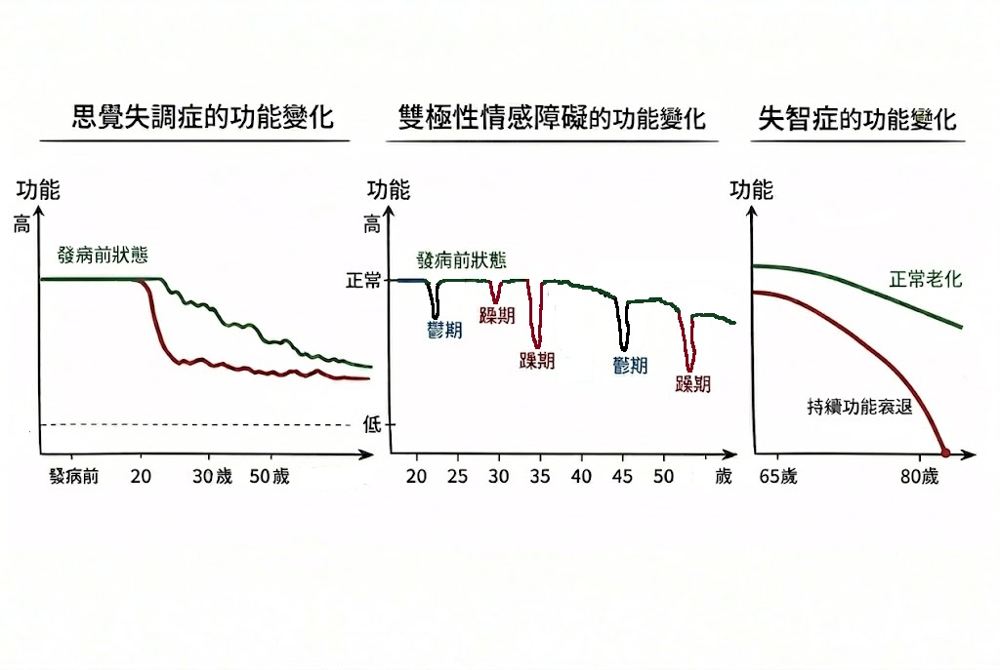

從「階梯下降」到「陡峭衰退」：
看懂思覺失調、躁鬱症與失智症的功能問診精隨
洪成志醫師 撰文 | 2026/3/2
在舒眠身心醫學診所的衛教專區中，我們深入探討過「單一用藥的實證王者」鋰鹽與思樂康，也談過「精準看待副作用」的重要性。
今天，洪成志醫師要帶您與家屬看一個更核心、更具臨床深度的觀念。這不只是一篇給大眾的衛教，更是我常常在教學時，對台北榮總的學弟妹們（住院醫師）反覆耳提面命的主題：精神科問診的核心，在「功能」，而非「症狀」。
🩺 洪成志醫師教住院醫師的一堂課：問功能，不問症狀
許多年輕醫師在臨床上很容易落入一個盲點——只專注於病人現在有哪些「症狀」：
- • 「你有沒有幻聽？」
- • 「你最近情緒高昂嗎？」
- • 「你晚上睡得好嗎？」
這些問題當然重要，但它們只捕捉了病人的「一個切面」。要精準診斷，並為病人量身訂做最精簡、有效的長期治療計畫，我們必須看見病人的「完整生命歷程」。也就是說，我們必須問：「這個病人過去的功能（functional level）發生了什麼變化？」
透過這張精心設計的平板電腦數位圖表，我們可以非常清晰地看見思覺失調症、躁鬱症與失智症，在 lifelong functional changes 上的關鍵差異。僅看 functional course 本身就提供判斷診斷的關鍵差異：

圖表解析：三大疾病的王者之爭與功能衰退
從這張圖中，我們可以看到這三種精神疾病在「功能病程」與「預防效果」上的根本區別：
1 躁鬱症 (Bipolar Disorder)：陣發式起伏與間期功能恢復
如圖右側所示，躁鬱症的病程是波浪狀陣發性的。功能水平隨「躁期」與「鬱期」發作而波動。
然而，這類疾病最迷人的特徵在於：在陣發間期（Inter-episode / euthymia，即情緒穩定期），患者的功能往往能幾乎完全回復到接近原有水平水平。
這意味著，只要能用對藥物、規則服藥，鎖住情緒的雲霄飛車，許多躁鬱症患者在絕大多數時間裡，功能完全可以跟常人一樣，甚至表現得非常出色。
2 思覺失調症 (Schizophrenia)：功能階梯式下降與持續缺損
思覺失調症最致命的特徵是：一旦發病，就不容易回復到原有的 Baseline 功能水平。
如圖左側所示，患者從青少年時期功能緩慢下降。在成年早期第一次發病（圖中紅色箭頭向下）後，功能會急劇下降。雖然經過治療可以穩定下來，但恢復到的「新穩定狀態（新的 Baseline）」，幾乎都低於發病前的狀態。
疾病復發會導致功能再次階梯式下降，展現出「持續功能衰退」。每一次發病都是對大腦功能的二次傷害。
3 失智症 (Dementia)：持續不可逆之陡峭下降與功能綞失
如圖右側最右端所示，失智症發病後的 lifelong functional changes 展現出一種「持續且不可逆的陡峭下降」模式。
不同於正常老化，也不同於躁鬱症有陣發性回升或思覺失調有階梯式平台。功能水平一經下降，便會持續陡峭向下跌落，直接導致最後的「生活能力綞失」。
這就是為什麼看 functional course 本身就提供診斷的關鍵差異；只要在功能下降時加入臨床症狀問診，診斷就能變得很清楚。
🩺 結語：精準醫療，找回完整的你
我們只要能客觀地畫出病患 lifelong functional level changes，配合病患家屬對於「他以前是怎樣的人」功能的描述，診斷幾乎就已經呼之欲出了。
藥物不是為了剝奪你的靈感或快樂，而是為你的情緒與大腦功能建立最安全的護欄，讓你能安心地享受沿途的風景，而不用擔心失速墜落。
文章回饋與私密發問
對這篇文章有任何疑問，或想進一步了解的地方嗎？請在下方留言，訊息將直接傳送至醫師信箱，保障您的隱私。